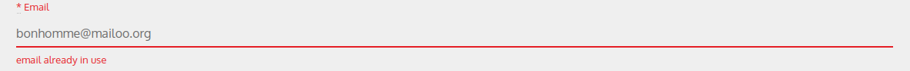

1. Overview¶
1.1. What this is about¶
Community
Twinstrangers.net is a website that help its users find their match by searching with their provided facial features. When a user find their match they can contact us and we will put them into contact.
1.1.1. User informations¶
When a user sign-up she/he must give a list of personnal informations that will help them filter their matches, and us to contact them. A user must provide the following informations:
- Account: A user sign-in using username/password
- Contact Details: We ask for the fullname to be able to verify the authenticity of the account. A valid email adress is necessary to confirm the account creation.
- Country: It is fun for the user to know they have a twinstranger from a different place in the world. It also helps us keep statistics.
- Gender and Age: The user will only be displayed persons of the same gender and they can also filter by age range. It also helps us keep statistics.
- Photos: 2 photos must be submitted, when looking for a match the users will only be displayed photos of other users with their country.
- Ethnic Type: By default the user will be displayed persons of the same ethnicity but can be disabled by the user.
- Facial features: One of the core element of the Website, users are filtered by facial features, this is the key feature to narrow the number of potential matches and help the user find their TwinStranger.
1.2. Technologies involved¶
1.2.1. Ruby On Rails¶
The Website is a Ruby On Rails application. Ruby On Rails is a web framework that is MVC (Model View Controller) based. Which means that the View (what the user see) is dissociated from the Model (Our code) and the communication between the two is made by the Controller.

1.2.1.2. Advantages¶
- awesome: Rails is Awesome and is totally worth the hassle.
- Gems: You don’t have to reinvent the wheel and it saves you time and bugs.
- MVC: we could easily build a mobile application if we make a RESTful API because the view is dissociated from the Model and the Controller. *Tip*: Try to make a fat model, and skinny view, the controller should only make the link between the two. Most of your code should be in the Model.
- Database: PostgreSQL is well integrated within our Rails application. Your Model is in fact directly linked with the table on the database. Rails is a very powerful tool to manage a database within a web site. See Migration page on how to generate tables, associations to our PostgreSQL database. Also see Basic on what a Rails Model is. And Associations to understand how associations between tables are handled by Rails.
Note
Here is some Ruby code extracted from our Mouth class. A User has one Face, a Mouth (type) can be shared by many users so we set a has_many association with faces.
See that Ruby is a Verbose language and that plurials are part of the language so be careful with the naming of your classes!
We can also add methods in our class, here the options_for_select method return a list of all Mouths available as map of [description(:string) and id(:int)].
class Mouth < ActiveRecord::Base
has_many :faces
def self.options_for_select
order('LOWER(description)').map { |e| [e.description, e.id] }
end
end
1.2.2. PostgreSQL¶
The database is using postgresql. It is stable, secure fast and easy to use, everything we ask of a modern database.
1.2.3. Amazon Web Services¶
The Website(Ruby On Rails App), the Database, the Photos of users, the smtp email sender, the DNS routes are all services provided by Amazon Web Services (AWS) List of Services Used:
- Elastic Beanstalk: Cloud solution for the Ruby On Rails Application. This is where our application is running. You can connect to the server using ssh. Save your modifications with Git first and deploy using the command-tools offered by amazon
eb deploy- RDS: This is where our PostgreSQL database is stored. The instance is linked with our Elastic Beanstalk instance. You should be very careful with it and try to make backup from time to time.
- S3: Cloud Storage for users’ photos.
- SES: Smtp email sender, allow us to send emails to more than 2000 users a day (gmail limit), emails are necessary for registrations.
- Route 53: DNS routes, redirections to our Ruby On Rails application.
- ElastiCache: Allow us to share session cache. You have to use it if you want to set-up a multiple server configuration, or else you will have authentification token problems, session cache and authentification tokens are stored into the service. See ElastiCache with Devise. Currently the website only support 1 server.
1.2.4. jQuery¶
Form validation on the client side. When a user use an already existing username/email she/he is told so.
